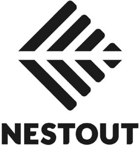

Trade Mark Journal No.2025/020 16 May 2025
WO0000001727395 (9,11)
Office of origin: Japan
Date of International Registration:9 February 2023
Date of designation in the UK:
28 February 2025

- Class 9
- Tripods for projectors; USB chargers; wireless chargers; cable adapters; battery chargers; power strips; photovoltaic apparatus for converting solar radiation to electrical energy for mountaineering or camping; solar-powered battery chargers; battery packs; batteries; electrical cells; USB cables; electric cables; electric adapter cables; boxes specially adapted for housing electric cables and associated cable codes; electric cords; electrical extension cords; headsets; cases for earphones; covers for earphones; earphones; headphones; loudspeakers for mountaineering or camping; speaker stands; tripods for digital cameras; covers for smartphones; cases for smartphones; straps for smartphones; ring stand holders for smartphones; selfie sticks for use with smartphones; tripods for smartphones; wireless charging pads for smartphones; stands adapted for smartphones; anti-drop grips for smartphones; fall prevention belts for smartphones; protective cases for personal digital assistants; bags adapted for laptops; covers for tablet computers; protective cases for tablet computers; stands adapted for tablet computers; tripods for tablet computers; straps for tablet computers; application software to be used for portable power chargers for mountaineering or camping, loudspeakers for mountaineering or camping, luminaires for mountaineering or camping, photovoltaic apparatus for mountaineering or camping, electric fires for mountaineering or camping and fans for mountaineering or camping; USB adaptors; none of the foregoing relating to home or building automation or smart home or smart building products or services.
- Class 11
- Electric foot warmers; tripods for electric fans; electric fires for mountaineering or camping; airconditioning apparatus for mountaineering or camping; electric refrigerators; electric freezers; electric hot plates; electric thermo-pots; electric kettles for household purposes; electric rice cookers; autoclaves, electric, for cooking; deep fryers, electric; electric mug warmers; electric beverage warmers; electric apparatus for keeping the beverages hot or cold; coffee brewers, electric; sandwich makers, electric; cooking utensils, electric; electric luminaire for mountaineering or camping; electric lanterns for mountaineering or camping; tripods for electric lanterns; pocket searchlights for mountaineering or camping; lighting apparatus with sensors for mountaineering or camping; USB-powered desktop fans for mountaineering or camping; blankets, electric, not for medical purposes; heating cushions, electric, not for medical purposes; electrically heated pillows, not for medical purposes; electrically heated clothing; electric hot plates for household purposes; electromagnetic induction cookers [for household purposes]; electrically heated carpets; electric hot-water bottles; Japanese electric leg-warming apparatus for household purposes [electric Kotatsu]; electrically heated sleep masks, not for medical or sanitary purposes; electrically heated mugs; electric pots and pans; electrically heated sleeping bags; none of the foregoing relating to home or building automation or smart home or smart building products or services.
Elecom Co., Ltd.
Representative: FUJIMOTO & PARTNERS, Sakaisuji-Inabata Bldg. 2F,, 15-14, Minamisemba 1-chome,, Chuo-ku, Osaka-shi, Osaka 542-0081, JAPAN